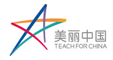

关于北京立德未来助学公益基金会 北京立德未来助学公益基金会是2014年4月18日在北京市民政局注册成立的非公募基金会。立德未来以“促进中国农村教育发展、打造专业农村教育体系、培养青年社会责任感、输出教育领域优质人才”为服务宗旨，经过多年在农村一线教育的积累和实践，形成以美丽中国项目为核心，美丽小学、教育均衡发展示范区、中国农村教育研究中心等创新项目共同发展的项目矩阵。

关于美丽中国 美丽中国 (Teach For China) 成立于2008年，是北京立德未来助学公益基金会下设的教育非营利项目。
美丽中国是支教项目，但不只是支教项目：项目招募每年优秀青年人才，经过培训，作为全职教师输送到我国教育资源匮乏地区从事至少两年的一线基础教育教学工作，实现学生在教育上的突破性发展；通过两年的一线教学实践，激发这批年轻人对学生和教育事业的热爱和信念，将这批优秀教师培养成为未来杰出的教育人才。
我们持续不断地努力，希望在不久的将来：让所有中国孩子，无论出身，都能获得同等的优质教育。
成立九年来，美丽中国已累积为教育资源匮乏地区输送了超过1000位项目老师，他们分布在云南省、广东省、甘肃省、广西壮族自治区的220多所中小学的课堂上，影响着超过330,000学生人次，累计教授超过1,140,000节课。
关于美丽小学 为了更深入地探索中国农村教育模式，进一步促进农村教育资源均衡发展、推动教学方法和教育理念的提升，立德未来在立足美丽中国项目的基础上，于2015年提出了美丽小学的设想。
立德未来派驻管理团队和教师团队，受当地教育主管部门委托进行办学试点。在保持公办学校性质不变的前提下进行全方位的探索与创新，总结中国农村办学经验与教训，创立一套可推广的农村办学规范标准——“美丽标准”，形成可复制的农村办学方法和模式,
以点带面， 有效探索和解决农村教育问题。首所美丽小学于2016年9月在楚雄创立，未来基金会将通过模式探索，推广开办更多美丽小学。

美丽中国 校园招聘会！
扫二维码，添加美丽中国招募小助手